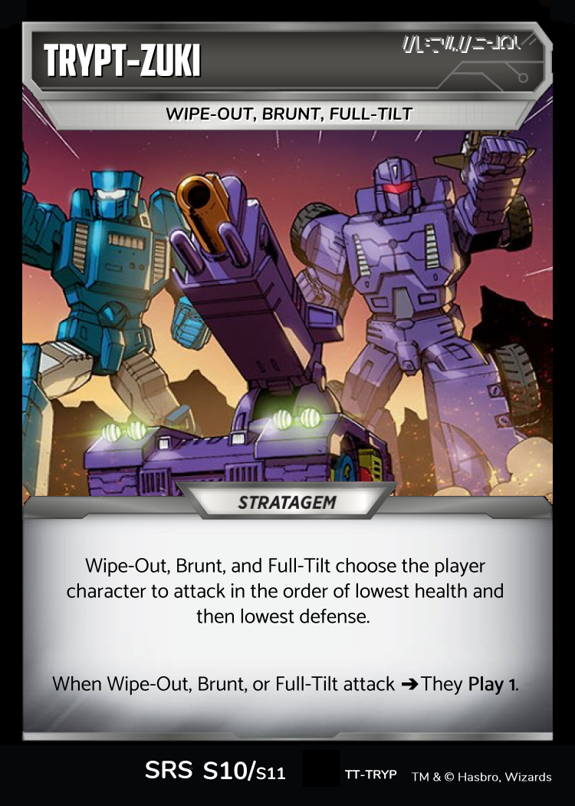
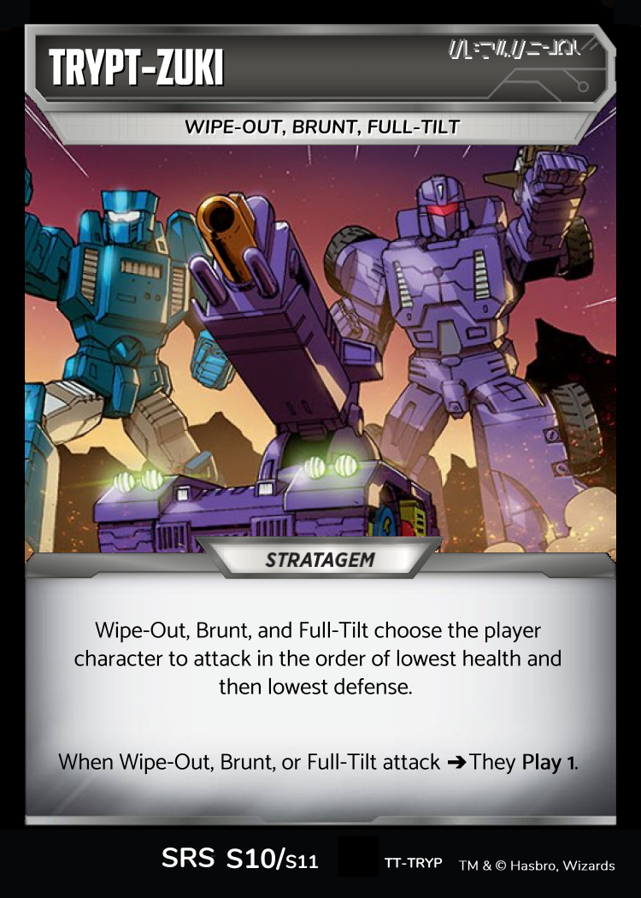

Transformers TCG - Titan Takedown
Trypticon - Villainous Kaiju
[Titan Takedown is in early development - I hope you play, I hope you enjoy yourselves, I hope you help me make it better]
Welcome to Titan Takedown, in which multiple players battle together to defeat the rampaging Trypticon.
In Titan Takedown, the players co-operate against an automated deck, moving their way through a set of Stratagems. The goal is not to simply win the game, but to see how many levels of Titans the players can defeat.
The Stratagem Pile
The first things the players do is put together the Stratagem pile. In the case of Trypticon, Villainous Kaiju, that means creating a pile of, top-to-bottom, an Initial Deploy, a pile of Kaiju cards, and then a Final Assault. It is recommended that a one-player game starts with an Initial Deploy and a Final Assault, and then for each additional player another randomly chosen Kaiju is added.

There may be additional Stratagems to include with general rules. For example, Trypticon, Villainous Kaiju, comes with Titanic Bite and Trypt-Zuki, which remind the players when to play cards for their enemy.
 

Lastly, the enemy's deck will need to be built. For Trypticon, Villainous Kaiju, it is recommended that it include six Battlefield Incursions, three Wave 1 Rapid Conversions, and three Wave 2 Rapid Conversions. The remaining 28 cards are recommended to be Common cards with limited decision making to them. Cards like Leap into Battle, Force Field, Primary Laser, and Armored Plating are good choices. Building a pack of some 60 cards, and then randomly choosing 28 cards from that larger set will make for less predictable games.
Players themselves build whatever, typical legal Transformers TCG they wish to build. During the game their battlefields are independent areas. A Heat of Battle played by one player will not apply to the other player's cards. If one character has Stealth or Bravery, only the characters on that player's battlefield will effect the decision of who can be attacked.
The players decide their player order, which will remain the same throughout the match, draws 3 cards, and then the turn order works as follows:
- The players start. Each player takes an initial turn. They draw a card and attack. For turns other than the game's first turn, the players may play an Upgrade and an Action.
- Next it is the Titan's turn. The players determine the order in which enemy characters attack, following instructions on the appropriate Stratagems. When a Titan attacks, its attack applies to every available character. The players flip cards to defend for each character who is being attacked.
- Lastly, each player takes a final turn. They draw a card, may play an Action and an Upgrade as usual, and attack out.
- Then all characters untap and the players start again with their initial turn.
The players win if they can KO the enemy.
New Keyword: Invulnerability
Invulnerability means that a character may not take attack damage until all characters untap. With Trypticon, Villainous Kaiju, this means that when you defeat one Stratagem, you won't be able to do attack damage to Trypticon until you return to the initial turn.
New Keyword: Play N
When used as a keyword, i.e. Bold, with a Capital P, and always with a numerical value, Play N means that you play the top N cards of the deck, one at a time. Play N is, like Bold, or Tough, something that relates to a character, so if the card played is an Upgrade, it goes on the character the Play N is being applied to.
Mid-Stage Stratagems
Titan Takedown uses mid-stage stratagems to grow the difficulty with the number of players. The Trypticon, Villainous Kaiju deck currently has four mid-stage stratagems. Each is intended to adjust the style of the Titan's gameplay.
Scrapping the Titan's Cards
The Titan scraps their flipped cards at the end of each player's turn.


At the end of the game, the players will have to take down the final boss level. In Trypticon, Villainous Kaiju, the Final Assault sees a supercharged Trypticon throw everything at taking down the players.

If you find yourself easily defeating Trypticon, Villainous Kaiju, all is not lost. Due to the work of maniacal scientists, Trypticon can raise from the dead with the Zombie Seabozu Stratagem. Play this and see how many more stages of Titan Takedown your deck can take.

Decisions
Whenever the enemy has to make a decision, the players are permitted to make that decision provided they abide by any instructions on stratagems. For example, if Brunt is KO'd, the players decide which player will lose an Armor or Weapon, and the player decides which one that will be. Decisions must not cheat the intent of the game - for example you cannot choose a player with no Armor or Weapon on a character.
There are situations when it would subvert the intent of the game for the players to make the decision. In these cases, the players should use a random method. For example, when Perceptor flips, the player should put the top 4 cards into two piles of two without looking at them. Then they may flip them and pick a pile.
Decisions
I very much hope you enjoy playing Titan Takedown, and I would love to hear any and all feedback. This is very much a work in progress.